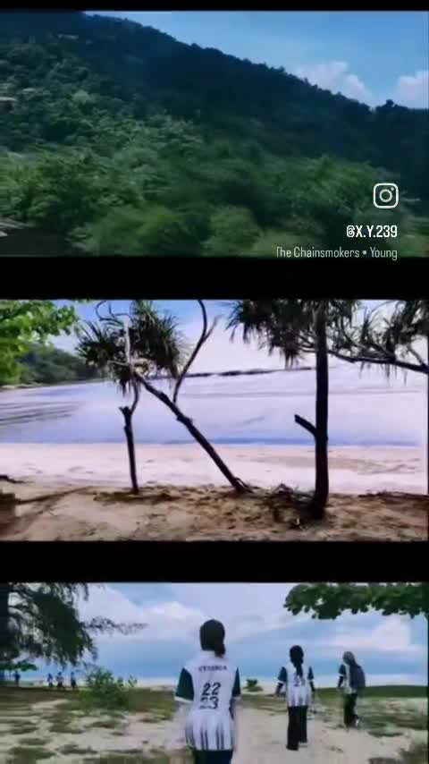

FIELD NOTES / 01 — 2026
Nature.
People.
Places.
A quiet collection of photographs, moving images and visual notes from the world around us. Made slowly, observed closely.
EXPLORE THE ARCHIVE ↓ STILL CURIOUS · ALWAYS EXPLORING
STILL CURIOUS · ALWAYS EXPLORINGNature is a place to return to — visual notes from everywhere in between —
01 / WORK
Collected moments.
From forest textures to changing coastlines, each project begins with paying attention.



02 / MOVING IMAGE
Stories that breathe.
Travel films and moving-image experiments that keep the atmosphere of a place: the light, the sound, the feeling of being there.
DISCUSS A PROJECT ↗03 / ABOUT
Look closer.
Feel more.
I'm Tarynn Lee, a visual creative drawn to nature, travel and the details that make a moment feel personal. My practice moves between photography, film, collage and visual design.
 FOLLOW ALONG ON INSTAGRAM ↗
FOLLOW ALONG ON INSTAGRAM ↗Let's make
room for wonder.
For freelance work, creative collaborations or just a thoughtful hello.
GET IN TOUCH ↗